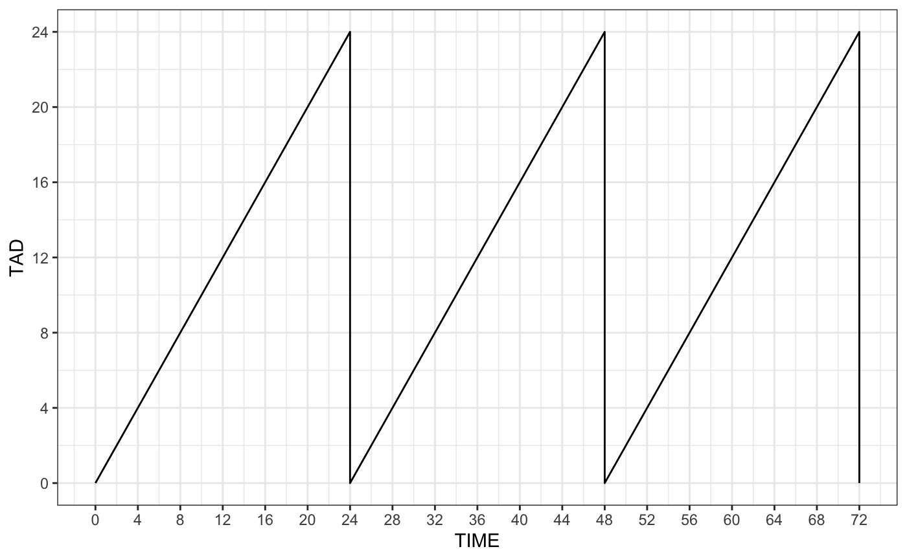

Overview
Calculate the time since and amount of the last dose. Additional (ADDL) dosing records are expanded and included in the calculation.
A PK profile
We’ll use this PK profile as an example
. ID TIME EVID AMT CMT II ADDL DV
. 1 1 0 0 0 0 0 0 0.0
. 2 1 0 1 1000 1 24 27 0.0
. 3 1 4 0 0 0 0 0 42.1
. 4 1 8 0 0 0 0 0 35.3
. 5 1 12 0 0 0 0 0 28.9
. 6 1 16 0 0 0 0 0 23.6The dosing runs over 12 weeks and there are 3 epochs, with 3 different doses, most of which are scheduled into the future via ADDL.
. # A tibble: 3 x 4
. TIME AMT ADDL n
. <int> <int> <int> <int>
. 1 0 1000 27 1
. 2 672 500 27 1
. 3 1344 300 27 1
Calculate TAD and LDOS
Use the lastdose() function
. ID TIME EVID AMT CMT II ADDL DV TAD LDOS
. 1 1 0 0 0 0 0 0 0.0 0 0
. 2 1 0 1 1000 1 24 27 0.0 0 1000
. 3 1 4 0 0 0 0 0 42.1 4 1000
. 4 1 8 0 0 0 0 0 35.3 8 1000
. 5 1 12 0 0 0 0 0 28.9 12 1000
. 6 1 16 0 0 0 0 0 23.6 16 1000Now we have TAD and LDOS in our data set.
Plot time after dose versus time

Observations before doses at the same time by default
ggplot(df, aes(TIME,TAD)) + geom_line() +
scale_x_continuous(breaks = seq(0,72,4), limits=c(0,72)) +
scale_y_continuous(breaks = seq(0,24,4), limits=c(0,24)) 
You can also make doses “happen” first
dd <- lastdose(df, addl_ties = "dose_first")
ggplot(dd, aes(TIME,TAD)) + geom_line() +
scale_x_continuous(breaks = seq(0,72,4), limits=c(0,72)) +
scale_y_continuous(breaks = seq(0,24,4), limits=c(0,24)) 
All doses explicit in the data set
df2 <- mrgsolve::realize_addl(df) %>% lastdose()
ggplot(df2, aes(TIME,TAD)) + geom_line() +
scale_x_continuous(breaks = seq(0,72,4), limits = c(0,72)) +
scale_y_continuous(breaks = seq(0,24,4))
How does it perform on bigger data?
Same setup as the previous profile, but more individuals.
We have 500K rows and 1000 individuals
. [1] 508000 8. [1] 1000Timing result
. user system elapsed
. 0.045 0.002 0.046Observations prior to the first dose
When non-dose records happen prior to the first dose, lastdose calculates the time before the first dose (a negative value) for these records.
file <- system.file("csv/data2.csv", package = "lastdose")
df <- read_csv(file)
lastdose(df) %>% head(). # A tibble: 6 x 10
. ID TIME EVID AMT CMT II ADDL DV TAD LDOS
. <dbl> <dbl> <dbl> <dbl> <dbl> <dbl> <dbl> <dbl> <dbl> <dbl>
. 1 1 0 0 0 0 0 0 0 -12 0
. 2 1 4 0 0 0 0 0 42.1 -8 0
. 3 1 8 0 0 0 0 0 35.3 -4 0
. 4 1 12 0 0 0 0 0 28.9 0 0
. 5 1 12 1 1000 1 24 27 0 0 1000
. 6 1 16 0 0 0 0 0 23.6 4 1000The user can alternatively control what happens for these records
. # A tibble: 6 x 10
. ID TIME EVID AMT CMT II ADDL DV TAD LDOS
. <dbl> <dbl> <dbl> <dbl> <dbl> <dbl> <dbl> <dbl> <dbl> <dbl>
. 1 1 0 0 0 0 0 0 0 NA 0
. 2 1 4 0 0 0 0 0 42.1 NA 0
. 3 1 8 0 0 0 0 0 35.3 NA 0
. 4 1 12 0 0 0 0 0 28.9 NA 0
. 5 1 12 1 1000 1 24 27 0 0 1000
. 6 1 16 0 0 0 0 0 23.6 4 1000More info
See inst/doc/about.md (on GitHub only) for more details.